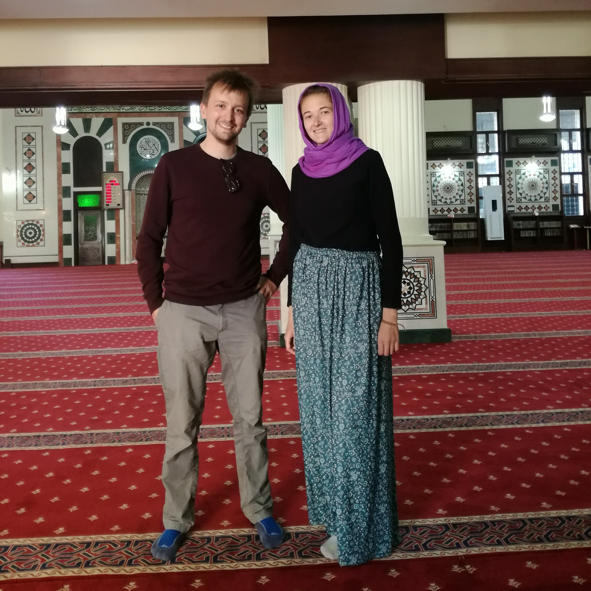
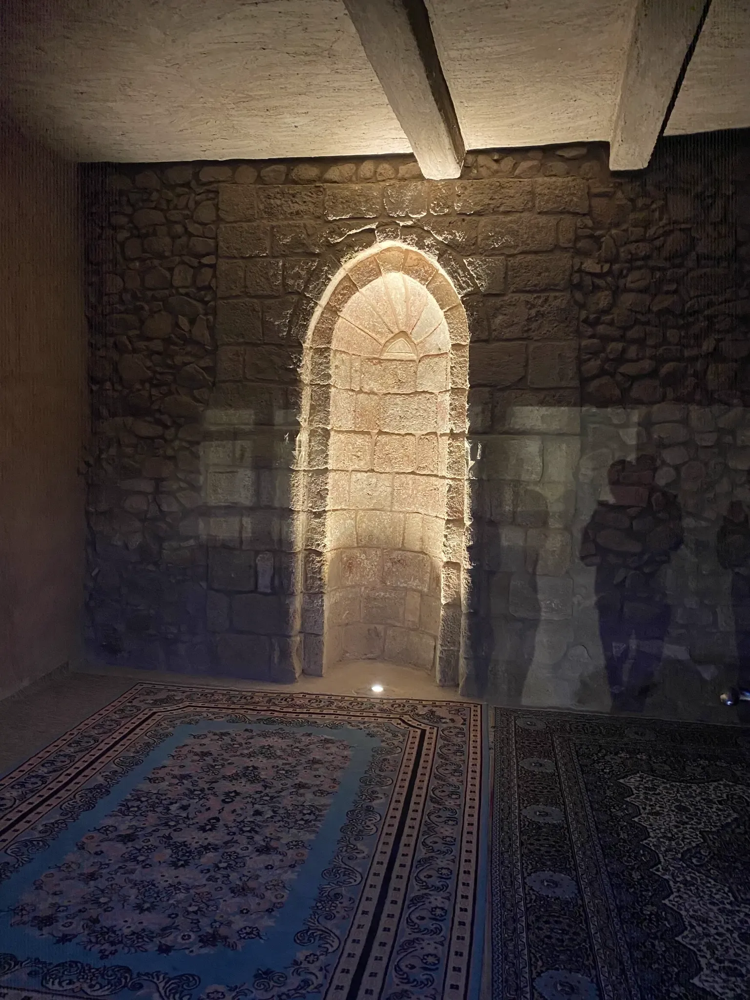
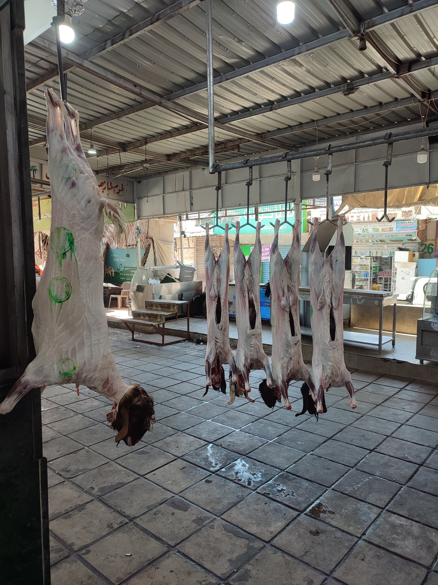

About this tour
Step back in time and uncover the hidden stories of the Old Town. This tour is led by a local historian and focuses on the architecture, legends, and pivotal moments that shaped the city from the 13th century to the present day.
What You'll See
- The Clock Tower: The tour begins with the legend of the clockmaker and the city's oldest market square.
- Hidden Courtyards: Discover the secret passages and private gardens tucked away from the main streets.
- The Merchant's Guild: Learn about the powerful guilds that controlled the city's wealth and politics.
- Final Stop: Concludes at the Cathedral, with recommendations for local cafes.
Meet Your Host

Alex Vesper
Alex is a licensed city historian and lifelong resident. His passion for local folklore and architecture brings the stones of the Old Town to life.
Gallery

